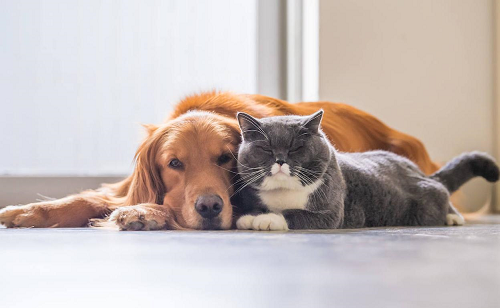
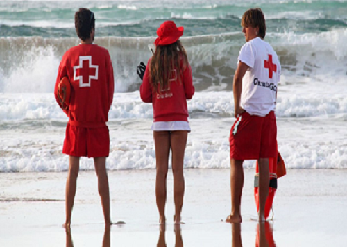
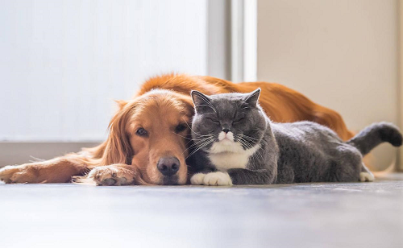
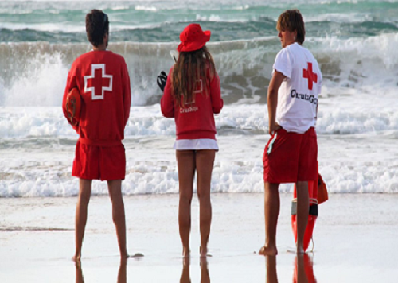

Un Poco Sobre Mi
Mi nombre es Joaquin Pagliero Selva, nacido en La Plata, de 26 años de edad. Desde temprana edad, tuve curiosidad y afinidad por las computadoras, convirtiéndose en una parte integral de mi vida. A medida que crecí, mi pasión por la tecnología se volvio cada vez más fuerte, alimentando mi deseo de explorar el vasto mundo de la programación.
Sin embargo, tambien la curiosidad por la naturaleza y los animales siempre ha estado presente en mi vida. De hecho, asisti a una escuela agropecuaria a 40km de mi ciudad natal, donde tuve la oportunidad de aprender sobre el cuidado de la tierra y las diversas formas de vida que la habitan. Esta experiencia despertó mi aprecio por el entorno natural y me inspiró a buscar formas de preservarlo y protegerlo en mi día a día.
Asi mismo me interesa la educacion y decidi embarcarme en estudios relacionados con la enseñanza. Uno de mis objetivos es convertirme en profesor en algún momento, transmitiendo conocimientos y compartiendo el amor por el aprendizaje con las generaciones futuras. Comprendo la importancia de empoderar a los estudiantes a través de la educación y busco ser un agente de cambio en sus vidas, ayudándoles a descubrir su potencial y alcanzar sus metas.
Además de mi amor por la enseñanza y la tecnología,también he explorado otro campo que me apasiona: el salvamento acuático. Complete con éxito el curso de guardavidas y descubri una satisfacción profunda al garantizar la seguridad y el bienestar de los demás en el agua. La idea de que mis habilidades puedan marcar la diferencia en la vida de las personas me motiva a seguir involucrado en esta área, trabajando para proteger vidas y promover la seguridad en cualquier entorno
Actualmente trabajo como electricista particular, brindando servicios de calidad y asegurando que los sistemas eléctricos funcionen de manera segura y eficiente.
En resumen, soy un hombre de 26 años, nacido en La Plata, con un amplio abanico de intereses y habilidades. Me víncule con las computadoras desde una edad temprana, mi amor por la naturaleza y los animales, mi búsqueda de conocimiento a través de la educación y mi dedicación al cuidado y seguridad de los demás en el agua, como mi actual trabajo de electricista particular, todo esto forma parte de mi historia. Sin duda en un futuro deseo de enseñar y espero que mi fascinación por la programación pueda converger en formas innovadoras y significativas.
 


